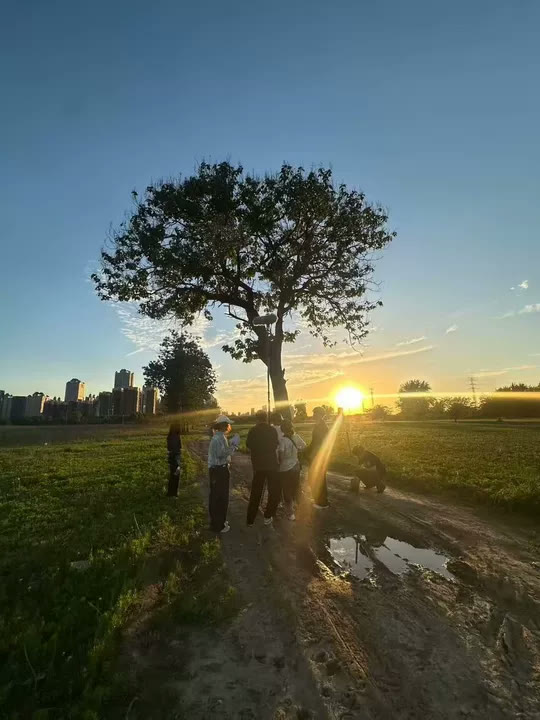
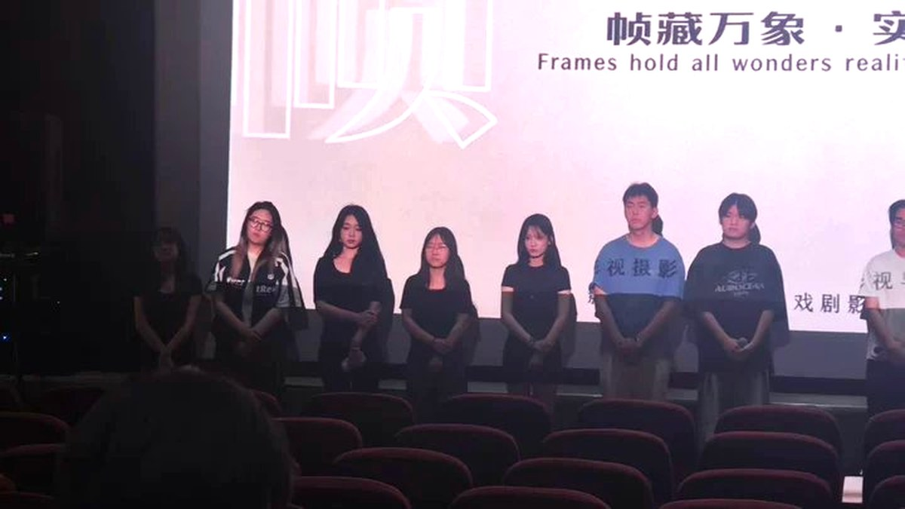
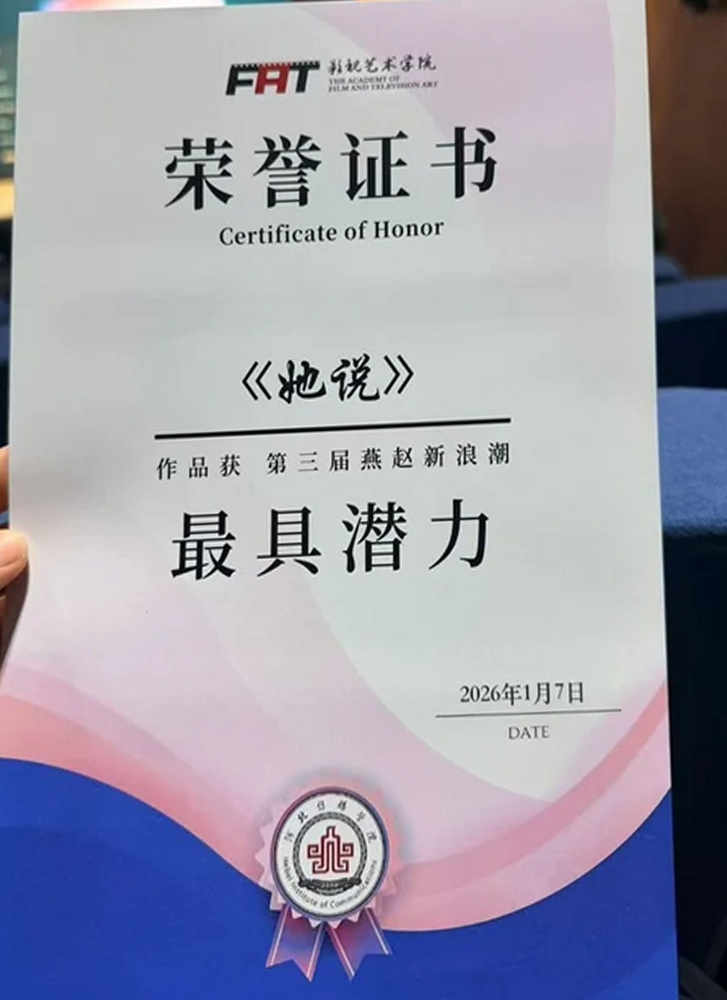
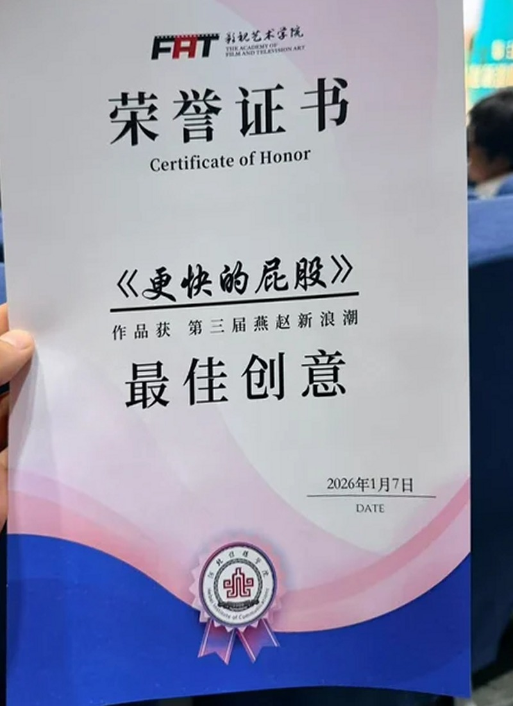
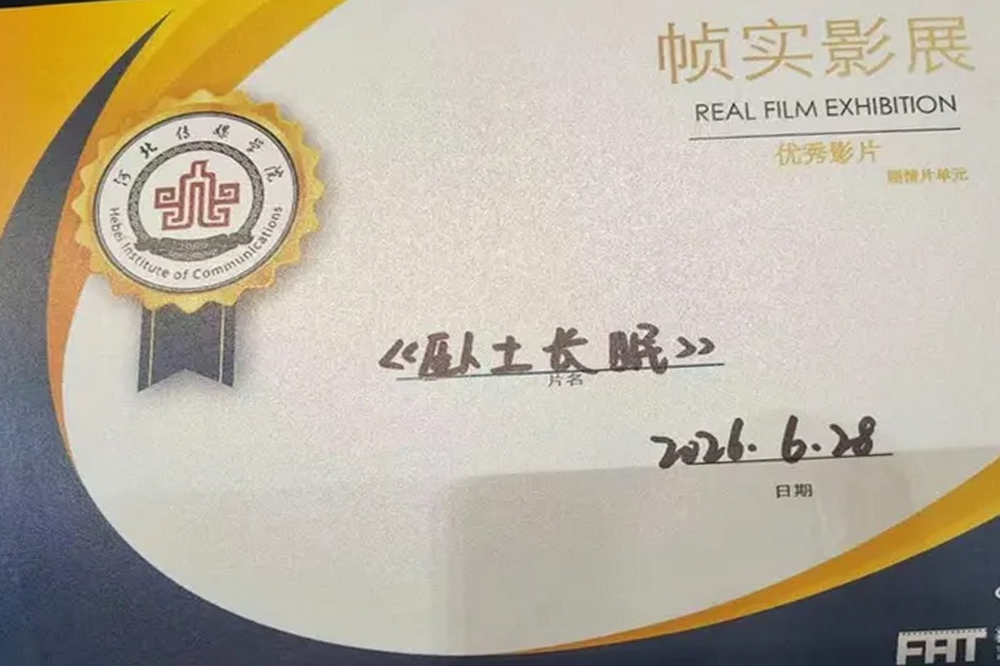

导演与编剧
01
剧本创作分镜设计现场调度
选角与表演舞台排练剪辑结构
从一句话的核心冲突出发，先找到片子的“气口”，再决定镜头。
Director · Editor · Storyteller
我是杨子毅，河北传媒学院戏剧影视导演 2027 届。 导演、剪辑、编剧，关注普通人的情感与北方县城的日常。作品《卧土长眠》获帧实影展 优秀影片，《她说》《更快的屁股》获第三届赵燕新浪潮 最具潜力 / 最佳创意， 参与金鸡奖提名影片制作，也做电影混剪与 AI 影像的尝试。
现居广州，寻找影视导演、剪辑与内容创作机会。
帧实影展 · 优秀影片 / 2026
Still Rolling · 还没拍完
我还在学。
学着把镜头端稳，也学着把话说短；学着在一场戏里等那口气， 也学着承认这一条还不够好。
如果这些画面里有一秒让你停了一下，那这一秒，就是我还要继续拍下去的理由。
杨子毅 · 2026 · 广州

A 55-second re-edit · 2026
《悲伤逆流成河》里真正扎人的不是事件，是那些说不出口的瞬间：人群、水面，和一张不敢抬起来的脸。 我把原片拆成素材，按情绪而不是按剧情重新排了一遍。
不做预告片式的信息轰炸，也不靠旁白解释。让镜头停在反应上，让原片的字幕留在画面里， 它更像一份证词，而不是一句解说。
把原片拆成镜头，只留有反应的画面：眼神、侧脸、沉默。交代剧情的部分整段删掉。
30 个切点，平均 1.8 秒一刀；34 秒处连着四刀 0.4 秒的短切，把情绪推到顶。
三屏、半格、叠印：把不同场景里的脸放进同一格，让观众自己补上那句没说出口的话。
片源：《悲伤逆流成河》（2018，导演 落落）；片名题字按原海报风格重绘。本片为非官方混剪，版权归原片方所有，仅作个人剪辑练习与作品展示，不作商业用途。
舞台剧《宝岛一村》Director · Rehearsal导演 / 排练
《卧土长眠》片场On Set2026.05 · 河北
放映与影展Screening帧实影展 · 2026




家装 · 留学知识类账号
《卧土长眠》《换气》《她说》《更快的屁股》《帧藏万象·实见真章》
河北传媒学院 影视艺术学院
剧本 → 分镜 → AI 生成 → 剪辑成片
第 38 届中国电影金鸡奖参评影片
本科 · 专业排名前 3%
从一句话的核心冲突出发，先找到片子的“气口”，再决定镜头。
口播、短片、电影混剪、AI 素材都剪；能在有限素材里把节奏救回来。
把 AI 当工具，不当答案；生成得越好，越考验判断。
Yang Ziyi / Director
我想拍的，是那些不被大声说出来的部分。
我是杨子毅，河北传媒学院戏剧影视导演专业 2027 届。在校期间专业排名前 3%，执导 《卧土长眠》《换气》《她说》《更快的屁股》《帧藏万象·实见真章》等短片，参与第 38 届金鸡奖 提名影片《但愿人长久》制作；也在排练场里导过舞台剧《宝岛一村》。
电影、舞台、混剪、口播、AI 影像，看起来是五件事，其实都在处理同一个问题：怎么让人愿意看下去。 现居广州，寻找导演、剪辑与内容创作机会。
证书：CET-4 / 普通话一级乙等 / 演出经纪人资格证 / 教师资格证（小学）
Get in touch
如果你在找导演、剪辑，或想聊一个还没成形的故事，直接打电话或加微信。 作品和简历都在这个网站里，方便的话告诉我你想聊的项目。
177 9803 6205